The Image
The Watercolor
of Sounds.
The color of frequency
For Coulouban, the boundary between arts does not exist. What he hears in the secret of his mind is an immense orchestra, a mathematical symmetry he strives to capture.
If he does not play it, he paints it. Painter of the soul, he transposes his visions onto watercolor paper. His canvases accompany his melodies : they are the angels of his inner sky and the faces of his silences.
The Cosmic Icons
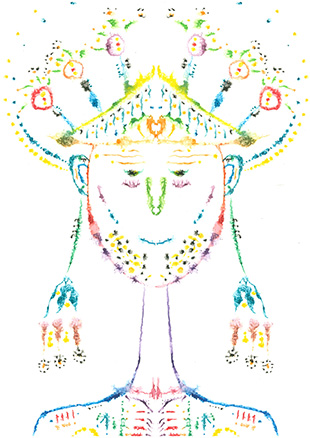
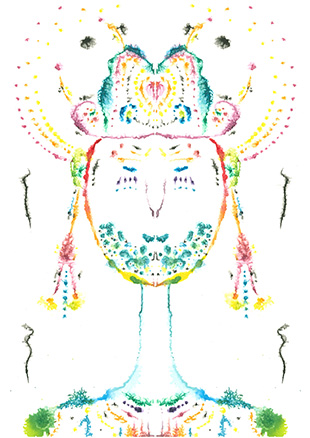
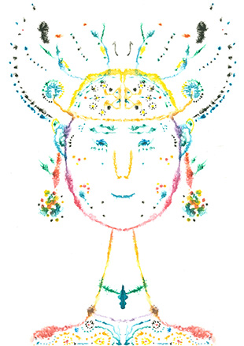
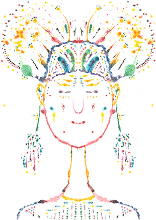
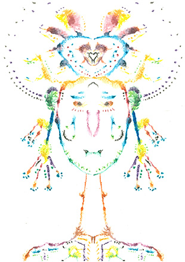
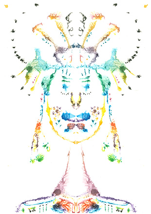
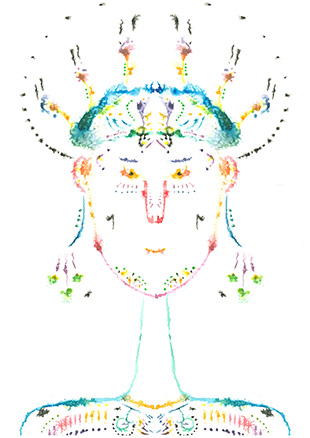
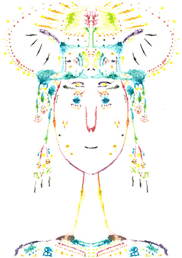
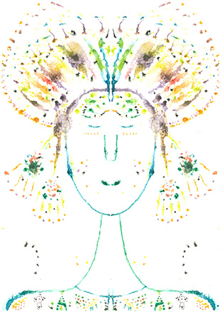
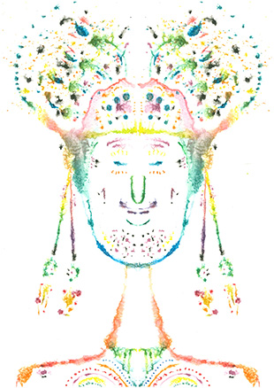
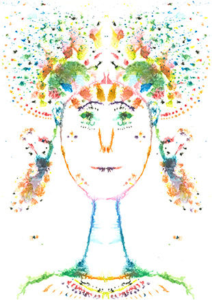
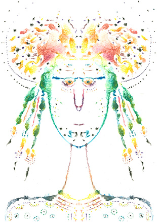
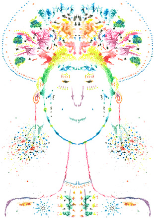
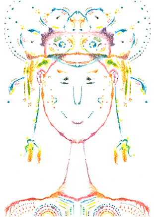
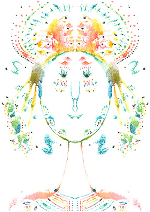
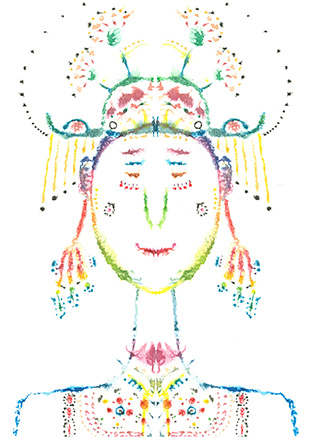
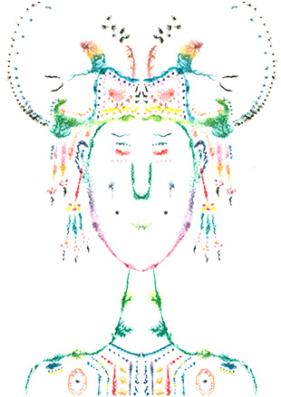
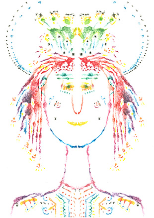
Click a canvas to enlarge
Now that the words are written and the canvases painted, it is time to make the light sing.
Live the Musical Experience